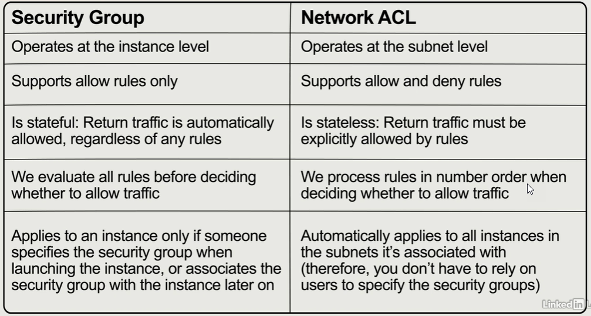

3. Network¶
- ENI - Elastic Network Interface - virtual network card or adapter attached to an AWS EC2 instance for basic networking. It can include multiple attributes, such as security groups, IPv6 and IPv4 addresses, MAC addresses, and more. ENI can be attached to an instance:
- when it’s running (hot attach)
- when it’s stopped (warm attach)
- when the instance is being launched (cold attach)
- Multiple ENIs connected to a single instance allows dual-homing
- ENIs are assocated with a subnet
- ENA - Enhanced Networking Adapter - use SR-IOV (Single Root I/O Virtualization) to allow speeds between 10 and 100 Gbps requirement
- EFA - Elastic Fabric Adapter - machine learning or HPC (High Performance Computing) requirement
VPC¶
An interactive IP address and CIDR range visualizer here
192.168 is the network and 0.1 is the host
DHCP (Dynamic Host Configuration Protocol) will be used to provide dynamic addresses where required within the VPC
Traffic Mirroring copies network traffic from an ENI and sends it wherever you want it to go
AWS VPC(Virtual Private Cloud) is like a logical datacenter in AWS. A VPC is an isolated portion of the AWS cloud dedicated to a single AWS account where you can launch AWS resources. You define a VPC’s IP address space from ranges you select (10.0.0.0/16).- Subnets are segments of a VPC’s IP address range where you can place groups of isolated resources (10.0.1.0/24).
- 1 subnet = 1 AZ
- each default subnet is a public subnet (DMZ). Each instance that you launch into a default subnet has a public IPv4 address and a private IPv4 address
- each nondefault subnet has a private IPv4 address, but no public IPv4 address
- a public subnet within a VPC is one that has at least one route in its routing table that uses an Internet Gateway (IGW).
- You can enable internet access for an instance launched into a nondefault subnet by attaching an internet gateway to its nondefault VPC and associating an Elastic IP address with the instance.
- EIP (Elastic IP) are public IP addresses from the VPC
- EIP are permnently allocated to you account untill released
- EIP has a price, so the account is charged untill release
- ENIs consume EIPs
- EIPs can be moved between instances in the same region.
- Creating an Elastic IP address and associate it with your EC2 instance would be the simplest way to make your instance reachable from the outside world.
- Route tables are a set of rules, called routes, that are used to determine where network traffic is directed.
- Internet Gateway allow communication between your VPC and the internet. An IG serves two purposes: to provide a target in your VPC route tables for internet-routable traffic, and to perform network address translation (NAT) for instances that have been assigned public IPv4 addresses
- 1 VPC = 1 IG
- egress-only internet gateway allows IPv6 based traffic within a VPC to access the internet, whilst denying any internet based resources to connection back into the VPC.
- VPN reuses existing VPN equipment and processes, and reuse existing internet connections.
- VPG (Virtual Private Gateway) is the VPN concentrator on the Amazon side of the Site-to-Site VPN connection.
- CWG (customer GateWay) is a resource that is installed on the customer side of the Site-to-Site VPN connection.
- VPC peering creates a connection between two VPCs using same or different accounts and regions.
- No transitive: VPC peering only routes traffic between source and destination VPCs.
- no transitive peering VPC-A <=> VPC-B <=> VPC-C ... VPC-A <> VPC-C
- owner role required
- RTs must be configured with the destination VPC and the origin (target) VPC peering.
- VPC Endpoints: connections that enables private connectivity to services hosted in AWS, based on region and service name, from within your VPC without using an Internet Gateway, VPN, Network Address Translation (NAT) devices, or firewall proxies.
- Interface endpoints
- Gateway Load Balancer endpoints
- Gateway endpoints
VPC pricing:
- traffic in the VPC is free
- using same AZ with private IP is free
- using different AZs and public IP has a cost
Some scans can be performed without alerting AWS, some require you to alert, such as Penetration Testing
every aws account has a default VPC in each region. AWS recomends not deleting them
You can have up to 5 non-default VPCs per account and region, but you can place a support request to increase the number.
Once a VPC is set to Dedicated hosting, it can be changed back to default hosting via the CLI, SDK or API. Note that this will not change hosting settings for existing instances, only future ones. Existing instances can be changed via CLI, SDK or API modifying the Instance Placement attribute but need to be in a stopped state to do so.
How to create a VPC¶
Creating a Basic VPC and Associated Components in AWS
-
Create VPCwith IPv4 CIDR block equals 10.0.0.0/16 and IPv6 CIDR block provided by Amazon.- Note that only a RT, a NACL and a SG are created

-
Create subnetwith IPv4 CIDR block equals 10.0.1.0/24 (public) and 10.0.2.0/24 (private) with different AZs.- AWS reserves both the first four and the last IP address (5) in each subnet's CIDR block, so there are 251 available IPv4 addresses instead of 256
-
Select the public subnet and from Actions, clic on
Modify auto-assign IP settingsto automatically request a public IP for a new network interface in this subnet. Create internet gatewayas the virtual router that connects the VPC to the internet.- Select the IG and from Actions, clic on
attach to VPCaws ec2 attach-internet-gateway --vpc-id "vpc-05fa9d6e7085db9bf" --internet-gateway-id "igw-0e2c1cfa68b4dfc76" --region us-east-2
Create route tableto specify how packets are forwarded between the subnets within your VPC, the internet, and your VPN connection.- New subnets will be associated to the main RT instead of this public RT.
-
Allow the internet access selecting the public RT and
Edit routesbutton andadd routewith destination 0.0.0.0/0 (IPv4) and ::/0 (IPv6) and our IG as the target (origin)open the connection from the IG to any IP address
-
Edit subnet associationsand select 10.0.1.0/24 to associate the public subnet with the public RT - Create first EC2 instances as WebServer with network equals our VPC
- select public subnet and
auto-assign public ipequalsuse subnet settings (enabled)for the first instance - Create new SG as WebDMZ with rules SSH and HTTP
- Create a new key-pair as rnietoe-ohio
chmod 400 rnietoe-ohio.pem # set read permissions to the user ssh ec2-user@3.16.203.67 -i rnietoe-ohio.pem
- select public subnet and
- Create second EC2 instances as DBServer with network equals our VPC
- select private subnet and
auto-assign public ipequalsuse subnet settings (disabled)for the second instance - Select default SG instead of WebDMZ
- there is no public IP so we can't connect to this instance

- select private subnet and
- Create new SG as DBSG with our VPC
- Add inbound rules of type
All ICMP - IPv2with source 10.0.1.0/24 to allow WebDMZ to ping EC2 instance inside this SG, HTTP, HTTPS, SSH and MySQL/Aurora
- Add inbound rules of type
- Set DBSG to DBServer from actions : security :
change security group. Remove default SG too- Ping the DBServer private IP from WebServer
ping 10.0.2.200
- Ping the DBServer private IP from WebServer
- Copy private key (rnietoe-ohio.pem) to WebServer and check the connection from WebServer to DBServer
nano rnietoe-ohio.pem chmod 400 rnietoe-ohio.pem ssh ec2-user@10.0.2.200 -i rnietoe-ohio.pem yum update -y # this fail because private instance does not have access to internet
By default, instances in new subnets in a custom VPC can communicate with each other across AZs.
NAT instances¶
- NAT instances (Network Address Transaction) are single EC2 instances.
- a NAT instance allows you to get your private subnets communicate out to the internet without becaming public
-
source/destination checkson the NAT instance must be disabled to allow the sending and receiving traffic for the private instances -
Launch EC2 instance choosing
Amazon Linux 2 AMI 2.0.20201126.0 x86_64 HVM gp2fromCommunity AMIs - Select rnietoeVPC and public subnet
- Select WebDMZ as SG and the same key pair
- Select EC2 instance and clic on actions : networking :
change source/destination checkand disable all the traffic it sends and receives, as NAT instance requirementaws ec2 modify-instance-attribute --instance-id=i-0cdece2dd619e009b --no-source-dest-check - Edit private route table and create a route (from
edit routes) to allow connections (0.0.0.0/0) to the NAT instance. Test it:ssh ec2-user@10.0.2.200 -i rnietoe-ohio.pem yum update -y # should work now, but it does not
We have created a small VM that will not work for thouthands of EC2 instances.
NAT Gateway¶
- NAT gateway enable instances in a private subnet to connect to the internet or other AWS services, but prevent the internet from initiating a connection with those instances.
- NAT gateway are redundant inside the AZ
- 1 NAT gateway per AZ
- not need to patch
- not associated with SGs
- no need to disable source/destination check

To use a NAT gateway, create one in a public subnet and assign it an Elastic IP address. Then, update the route tables for your private subnets to point internet traffic to the NAT gateway.
- Terminate previous EC2 NAT instance
- From VPC,
create NAT gateway - Select public subnet and allocate a new Elastic IP
- Edit private route table and create a route (from
edit routes) to allow connections (0.0.0.0/0) to the NAT gateway. Test it:ssh ec2-user@10.0.2.200 -i rnietoe-ohio.pem yum update -y # this work successfully yum install mysql -y
Network ACLs¶

- network ACLs are stateless (outbound traffic must be specified)
- Block IP addresses using NACL instead of SG
- NACLs act on the subnet level, while SGs act on the instance level.
- NACL rule number defined precedence
- Default NACL allow all traffic?????????????????
Create Network ACL:
- All inbound rules are denied by default???????????????
- Create a Web page in the EC2 WebServer and check the valid connection:
service httpd status # Unit httpd.service could not be found sudo su yum install httpd -y chkconfig httpd on service httpd start cd /var/www/html nano index.html <html><body><h1>This is server 1</h1></body></html>
Edit subnet associationsfor our NACL named WebNACL and select the public subnet- public subnet is disassociate from the default NACL because a subnet can be associated to a NACL only
- 1 NACL - 1 subnet
- web page is not accessible now
Edit inbound rulesadding new rules (100, 200, 300) allowing ports 80, 443 and 22- Rule Number increase in 100 units, like 100, 200, 300...
- inbound rules work order by rule number, so first allow some ports and then deny everything else
Edit outbound rulesadding new rules allowing ports 80, 443 and 1024-65535- NACL are stateless: outbound rules have to be defined explicitly
- Ephemeral ports
- Requests originating from Elastic Load Balancing use ports 1024-65535.
Edit inbound rulesadding new rule 400 denying port 80 to my public Ip 92.189.102.194/32- Web page still accessible since rule 100 allow the traffic
Edit inbound rulesediting rule 400 as 99- Web page no accessible since rule 99 deny the traffic before rule 100 allow all traffic
Edit inbound rulesremoving rule 99 and add new rule 400 to allow traffic on ports 1024-65535yum update -y # it should works again```
Each network ACL also includes a rule whose rule number is an asterisk. This rule ensures that if a packet doesn't match any of the other numbered rules, it's denied. You can't modify or remove this rule:
100 All Traffic Allow 200 All Traffic Deny * All Traffic Deny
VPC FlowLogs¶
- VPC Flow Logs is a feature that enables you to capture information about the IP traffic going to and from network interfaces in your VPC.
- VPC Flow Logs can be created at the VPC, subnet, and ENI levels.
- you can enable flow logs if VPC is in the same aws account
- you can not edit flow logs
not all ip traffic is monitored such as:
- Amazon DNS Server
- Windows license activation
- 169.254.169.254 (metadata)
- DHCP traffic
- VPC reserved ports
How to configure VPC FlowLogs:
Create VPCwith ipv4 CIDR block as 10.0.0.0/16Create subnetwith ipv4 CIDR block as 10.0.1.0/24 and enable auto-assign public IPv4 addressLaunch EC2 instancewith VPC, subnet and a new SG with HTTP and SSH rules- Create IG and associate it to the default VPC RT
Create flow login the ENI (Elastic Network interface)- specify the filter:
- accepted traffic only
- rejected traffic only
- capture all traffic
- set Maximum aggregation interval to 1 min
- flow log data destination can be CloudWatch Logs or S3 bucket. Select S3 bucket
Create bucketas arn:aws:s3:::rnietoeflowlogs- Specify AWS default format
- specify the filter:
Create log groupfrom CloudWatch as VPCFlowLogsCreate flow logagain:- specify the filter with all the traffic
- set Maximum aggregation interval to 1 min
- set flow log data destination as CloudWatch Logs
- select the destination log group as VPCFlowLogs
set up permissionsto define the IAM role that has permission to publish to the Amazon CloudWatch log group. Create new role as flowlogsRole with the following policy:{ "Statement": [ { "Action": [ "logs:CreateLogGroup", "logs:CreateLogStream", "logs:DescribeLogGroups", "logs:DescribeLogStreams", "logs:PutLogEvents" ], "Effect": "Allow", "Resource": "*" } ] }
- Go to CloudWatch : Log groups : VPCFlowLogs : Log stream and check results
Create filter patternas (protocol 6 is TCP):[version, account, eni, source, destination, srcport, destport="22", protocol="6", packets, bytes, windowstart, windowend, action="ACCEPT", flowlogstatus]- test pattern
2 086112738802 eni-0d5d75b41f9befe9e 61.177.172.128 172.31.83.158 39611 22 6 1 40 1563108188 1563108227 REJECT OK 2 086112738802 eni-0d5d75b41f9befe9e 182.68.238.8 172.31.83.158 42227 22 6 1 44 1563109030 1563109067 REJECT OK 2 086112738802 eni-0d5d75b41f9befe9e 42.171.23.181 172.31.83.158 52417 22 6 24 4065 1563191069 1563191121 ACCEPT OK 2 086112738802 eni-0d5d75b41f9befe9e 61.177.172.128 172.31.83.158 39611 80 6 1 40 1563108188 1563108227 REJECT OK
- set metric details
- test pattern
Create alarmfor above metric filter- set period to 1 min
- Whenever SSHAccept is greater/equal than 1
Run queryfrom CloudWatch Logs Insights using VPC Flow Logs sample queries (right panel)- Go back to S3 and check a new folder named
AWSLogshas been created in our rnietoeflowlogs bucket - Go to
AWS Athenaand set up a query result location in AWS S3 with the arn:s3://rnietoeflowlogs/AWSLogs/065275835852/vpcflowlogs/us-east-1/2020/12/12/ - Run query to create Athena Table
CREATE EXTERNAL TABLE IF NOT EXISTS default.vpc_flow_logs ( version int, account string, interfaceid string, sourceaddress string, destinationaddress string, sourceport int, destinationport int, protocol int, numpackets int, numbytes bigint, starttime int, endtime int, action string, logstatus string ) PARTITIONED BY ( dt string ) ROW FORMAT DELIMITED FIELDS TERMINATED BY ' ' LOCATION 's3://rnietoeflowlogs/AWSLogs/065275835852/vpcflowlogs/us-east-1/' TBLPROPERTIES ("skip.header.line.count"="1");
- Create Partitions
ALTER TABLE default.vpc_flow_logs ADD PARTITION (dt='2020-12-12') location 's3://rnietoeflowlogs/AWSLogs/065275835852/vpcflowlogs/us-east-1/2020/12/12';
- Analyze Data
SELECT day_of_week(from_iso8601_timestamp(dt)) AS day, dt, interfaceid, sourceaddress, destinationport, action, protocol FROM vpc_flow_logs WHERE action = 'ACCEPT' AND protocol = 6 order by sourceaddress LIMIT 100;
Bastion host¶
- a bastion (jump box) is used to securely administer/manage EC2 instances in the private subnet using SSH or RDP
- NAT gateway cannot be used as a bastion host
For high availability:
- create two public subnets in two different AZs with a bastion host each, and a Network Load Balancer with static IP address or Auto scaling group (cheaper)
- cannot use an Application Load Balancer as it is layer 7 and you need to use layer 4.
Direct Connect¶
Dedicated line from on premise to AWS to improve the (VPN) network connection (security and performance) from 1 Gbps to 10 Gbps
Create virtual interfacefrom AWS Direct Connect : Virtual interfaces as PublicCreate Customer Gatewayfrom VPC : Customer GatewaysCreate Virtual Private Gatewayfrom VPC : Virtual Private Gateways- attach the VPG to the VPC
Create VPN Connectionfrom VPC : Site-to-Site VPN Connections using the VPG and Customer Gateway- Set up the VPN on the customer gateway
How do I configure a VPN over AWS Direct Connect?
Global Accelerator¶
improves the availability and performance of your applications for local or global users
1234567890abcdef.awsglobalaccelerator.com
Create acceleratorfrom AWS Global Accelerator- Add a listener to checks for connection requests that arrive to an assigned set of static IP addresses on a port or port range that you specify. (80, 443)
- Leave client affinity setting as none
- Add endpoint groups where the accelerator direct traffic to from one or more listeners. An endpoint group includes endpoints, such as load balancers.
- Add endpoints to each endpoint group
- Endpoints can be Network Load Balancers, Application Load Balancers, EC2 instances, or Elastic IP addresses.
- two static IP addresses are assigned.
Disable Global Accelerator before removing is required
Network zones are simliar to AZs. They are isolated units with their own set of physical infrastructure and service IP addresses from a unique IP subnet. If one IP address from a network zone becomes unavailable, due to network disruptions or IP address blocking by certain client networks, your client applications can retry using the healthy static IP address from the other isolated network zone.
VPC endpoints¶
VPC endpoint is a service that replace NAT gateway and allow connections from the private subnet to other AWS services, such as S3

- Interface endpoints: ENI (Elastic Network Interface) with private IP as entry point
-
Gateway endpoints support S3 and DynamoDB
-
Create Endpointfrom VPC : Endpoints - select service
com.amazonaws.us-east-2.s3, our VPC, our main route table and the full access policy- the update in the route table could take some time
AWS Private Link¶
To open up our apps to other VPCs, we can try:
- if open up the VPC to the internet. everything will be public
- you can use VPC peering. However, many relationships will be required
- AWS Private Link peers many VPCs. They only require a NLB on the AWS VPC and a ENI on the customer VPC
Transit Gateway¶
TGW (Transit GateWay) is a network transit hub that interconnects attachments (VPCs and VPNs) within the same account or across accounts.
- Cross region is allowed
- support IP multicast
VPN CloudHub¶
AWS VPN CloudHub manage multiple sites with own VPN connections
Route 53¶
AWS Route 53 service name comes from port 53, where DNS (Domain Name System) work on
we can register a DNS using Route53 - Register domain. You can purchase and manage domain names such as example.com, and Route 53 will automatically configure DNS settings for your domains
Ensure there is a free bucket with the same domain name
- Failover Routing policy routes data to a second resource if the first is unhealthy. Route 53 can be used for Disaster Recovery by simply shifting traffic to the new region.
- Latency-based Routing policy routes data to resources that have better performance
Route 53 Traffic Flow makes it easy for you to manage traffic globally through a variety of routing types. Using Route 53 Traffic Flow’s simple visual editor, you can easily manage how your end-users are routed to your application’s endpoints—whether in a single AWS region or distributed around the globe.
.com => NS (Name Server) Records => SOA (Start Of Authority)
DNS changes can take 48 hours to take effect due to the cache
- CName (Canonical Name) maps to the host name: https://mobile.acloud.guru = https://m.acloud.guru
- Alias Record provide a Route 53–specific extension to DNS functionality. An alias could be created for the ELB. Alias Records can also point to AWS Resources that are hosted in other accounts by manually entering the ARN
ELB resolve DNS names instead of IPv4 addresses
Routing Policies:
- Simple Routing: one dns record with multiple IP addresses
- Weighted Routing: traffic based on weighting (20%-30%-50%)
- Latency-based Routing: traffic based on the lowest latency
- Failover Routing: route the traffic to the primary or secondary site defined based on health checks
- Geolocation Routing: traffic based on the user's location
- Geoproximity Routing: traffic based on the users' and resources' location. Available in traffic flow-only mode using bias
- Multivalue Answer Routing, similar to simple routing, but using health checks on each record sets to serve traffic to random web servers
Using Route53:
Register domainfrom Route53 takes between 2 hours and 3 daysCreate Record Setof type IPv4 address with the three EC2 public IPs. Set TTL (Time to Live) to 1 min to clear from cacheCreate healthcheckand associate it to each record set, so it will be removed from Route53 until it passes the health checkCreate traffic policyto configure Geoproximity Routing
ipconfig /flushdns # to remove saved ip from cache from the client side
With Route 53, there is a default limit of 50 domain names. However, this limit can be increased by contacting AWS support
API Gateway¶
API Gateway vs Application Load Balancer
API Gateway + Lambda + DynamoDB (serverless) instead of ELB + EC2 + RDS
API (Application Programming Interface) Gateway is like a door for your AWS environment. Targets are:
- Lamda
- EC2
- DynamoDB
scaling is automatic (as aws lambda)
enable api gateway caching to cache API gateway endpoint's responses for a TTL period in seconds. If a cache is configured, then Amazon API Gateway will return a cached response for duplicate requests for a customizable time, but only if under configured throttling limits.
same origin policy to prevent cross site scripting (XSS) attacks. CORS (Cross Origin Resource Sharing) allow restricted resources in a web page to be requested from a different domain. Enable CORS in Apigateway when the error message is "Origin policy cannot be read at the remote resource".